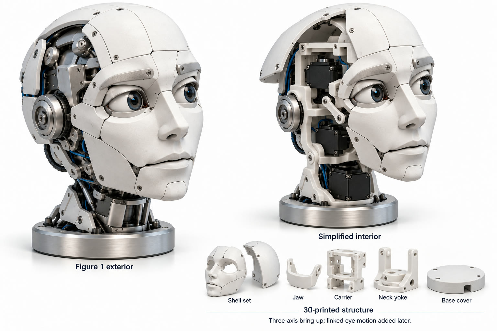
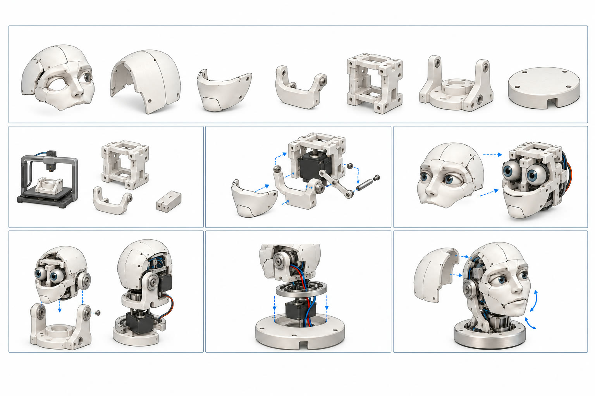
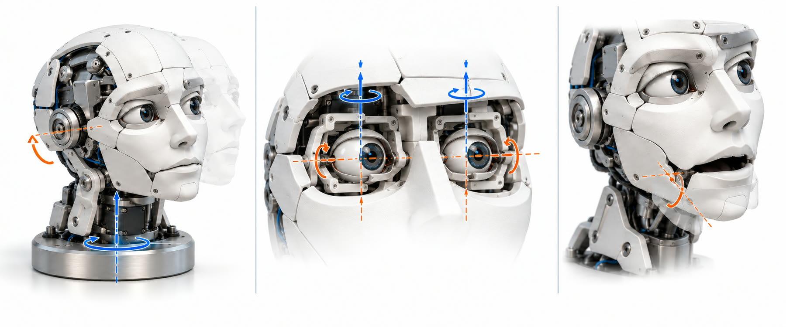

VERA is a robot head that holds a real conversation. It looks at you, speaks, and stops the moment you cut in.
Robots can talk. Few can tell when you've stopped listening, or show that they heard “Wait, I meant Friday.”
Move your cursor. Make it talk. Then interrupt it.
Same intent, different face: with its eyes locked, VERA turns its head to look at you instead.
A real Zoom interview. The host is real. Everything the robot says and does is generated.
Every 50 milliseconds.
Your voice and face, streamed in.
What to say, and what to show.
Translated to the joints this face has.
Neck, eyes, lids, brows and jaw, within safe limits.
When the robot can't make a gesture, it finds another one that means the same thing. If the neck can't nod, the eyes, lids and brows say “I agree” instead.
A 7B speech model that follows both sides of the conversation as it happens.
Running on our GPUsPredicts how a human listener's face would react, frame by frame.
Not released yet. Real human motion stands in.Turns that reaction into the next half second of motion this face can actually make.
Trained and running in simulationPredicts what a person watching would think the motion means. G learns to keep that meaning.
Trained on a scripted observer for nowG also gets a capability list: which joints this face has, how far and how fast each can move. Lock a joint and G adapts without retraining.
A real person (top left) and the 27-joint head driven by G. Top row: full face. Bottom row: neck locked, so G moves the eyes, lids and brows instead.
Rishabh ThakurThe 3× compares G with copying the human's motion straight onto a head whose neck is locked. Both are scored by R, so it is a simulation result until people rate the clips.
A rigid, 3D-printed head with off-the-shelf motors, under elastic skin.



Every joint is tested in MuJoCo before a motor turns.